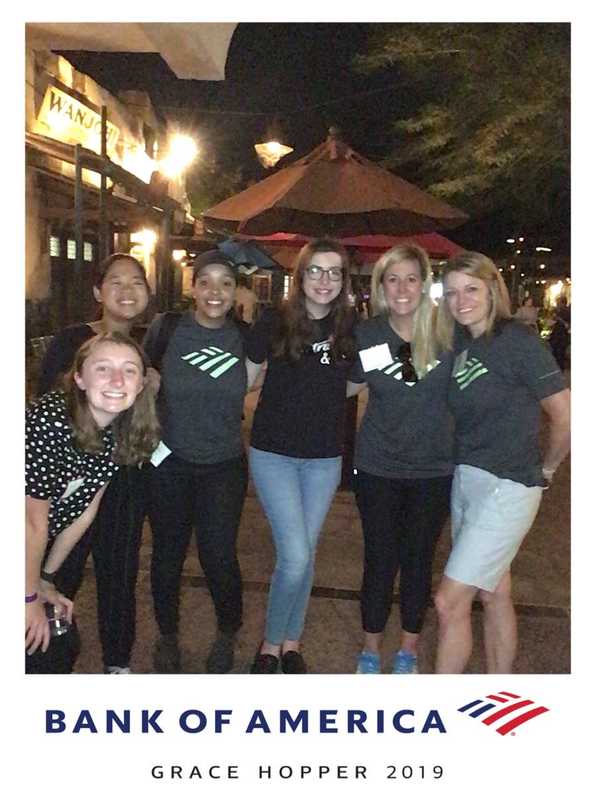

Summer Analyst at Bank of America
June - August 2020
Even though the program was shortened and made virtual due to the COVID-19 pandemic, I still had the opportunity to learn about the banking industry and the extensive use of technology in the industry. Our final cohort presentation was about leveraging Natural Language Processing to analyze the gap between consumer spending and government funding during the COVID-19 crisis.
